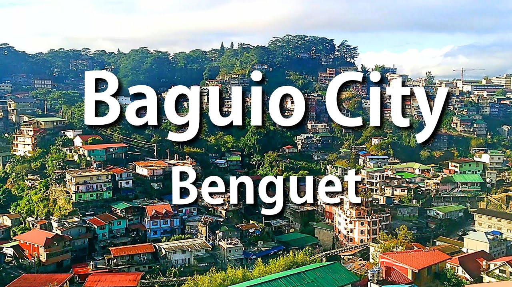
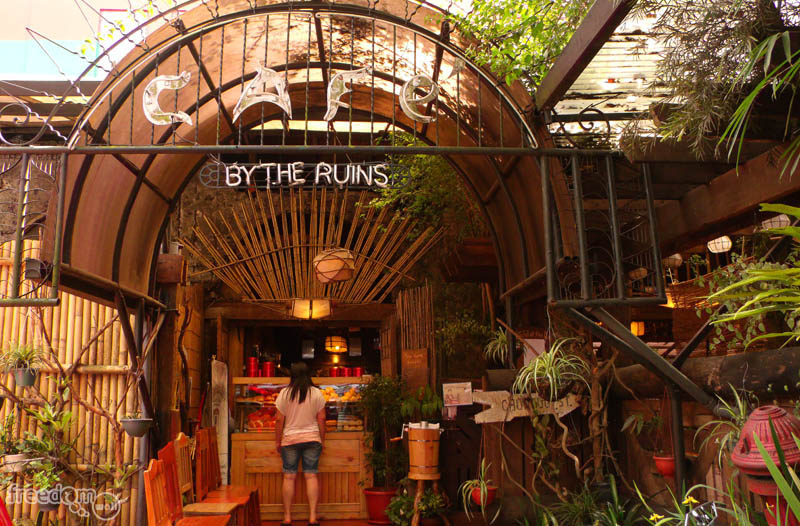

Home | About | Destinations |
|  |
Baguio is a first-class highly urbanized city in the Philippines' Cordillera Administrative Region. It is renowned as the "Summer Capital of the Philippines" because of its mild environment in the Luzon tropical pine forests ecoregion, which also promotes the development of mossy plants, orchids, and pine trees, giving rise to its other nickname, "City of Pines." The United States founded Baguio as a hill station in 1900 on the site of an Ibaloi town known as Kafagway. It was the only hill station in Asia owned by the United States. It is classed as a Highly-Urbanized City (HUC) and serves as the provincial capital of Benguet. |
|
Top 12 Menu Items in Cafe by the Ruins
| Source: Wandering Matcha's YouTube Channel |
Cafe near the Ruins Baguio City, 25 Chuntug Street. Cafe near the Dua Ruins. Baguio City, 225 Upper Session Road
Official FB page
 @TRAVELPHOfficial
@TRAVELPHOfficial All Rights Reserved 2021